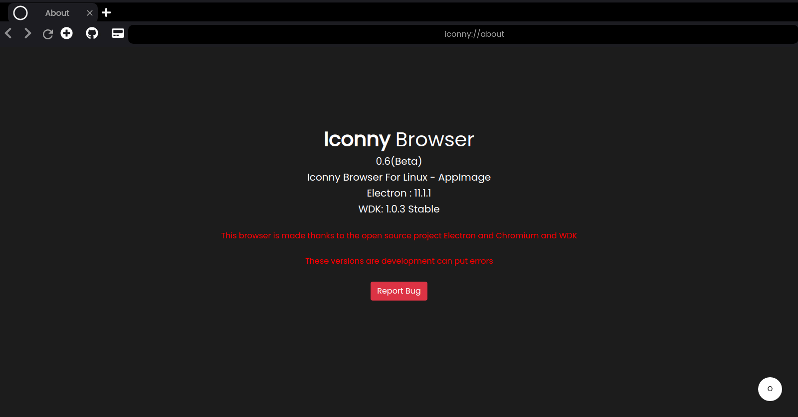
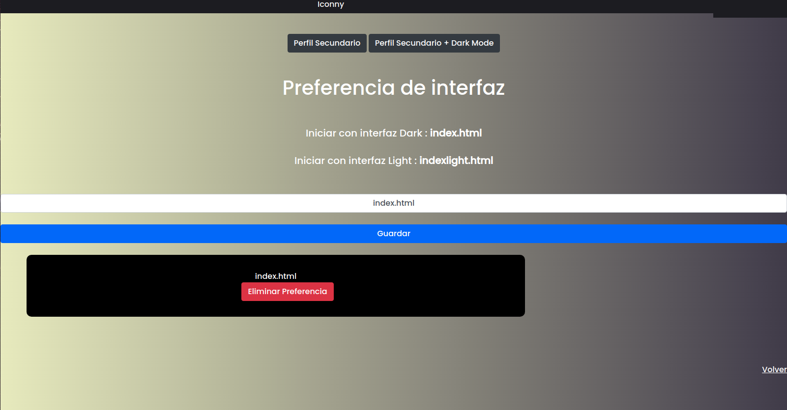
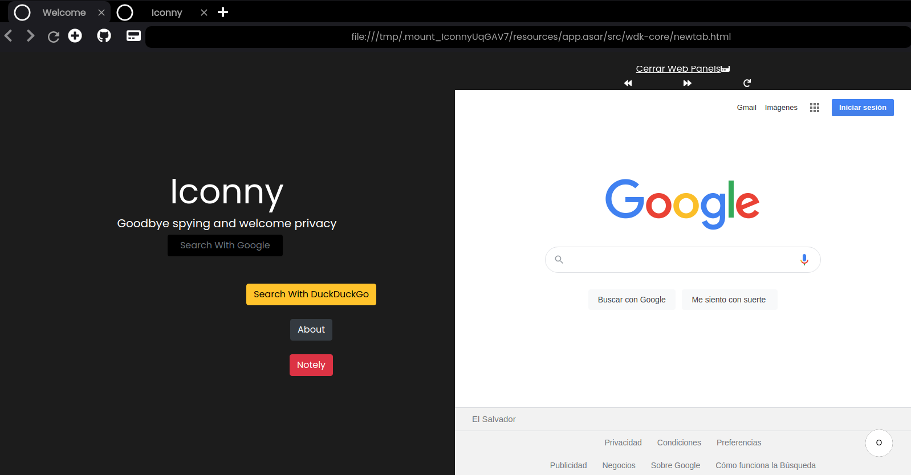
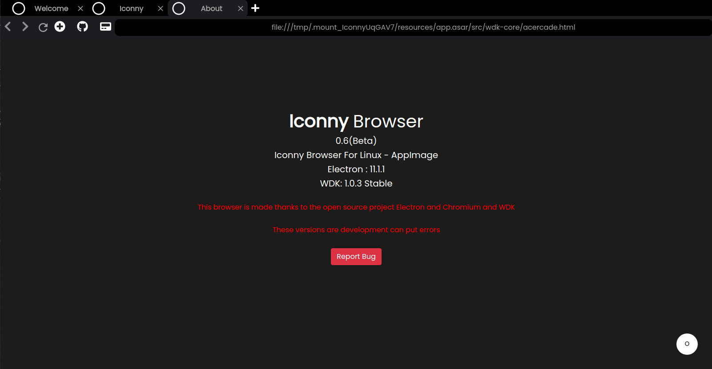

Iconny Browser Linux Primera Beta 0.06
Escrito por Admin 9/01/2021

Nos complace anunciar que iconny acaba de sacar su primera beta esto es una preview de lo que sera la proxima estable la version 0.07 se dejara en pruebas y reportes
hasta el 13 de enero para su posterior lanzamiento entre el 14 a 16 de enero
Novedades
Como primera novedad se incluye que el gestor de sesion en la seccion de configuracion se incluye el un formulario para personalizar el boton de Iniciar
siendo la funcion de este formulario entre la interfaz clara y oscura y este se guarda en localstorage

Formulario
Como segunda novedad es que se incluye el modo divido con github y web panels de WDK

Modo Dividido
Por ultimo como ultima novedad si incluye que en el about se puede mandar reportes mediante un boton de bugs

Gestor de sesion
Otros cambios menores :
Se cambio el boton de DEV
Se agrego un boton para web panels
Se agrego un boton para github
Correcion del webview principal en pantallas donde el scroll no esta disponible
Esperamos que les guste esta beta y que no se reporte bugs
Atte Administrador
Descargar La Version 0.06 Beta AppImage
Ver Release En Github